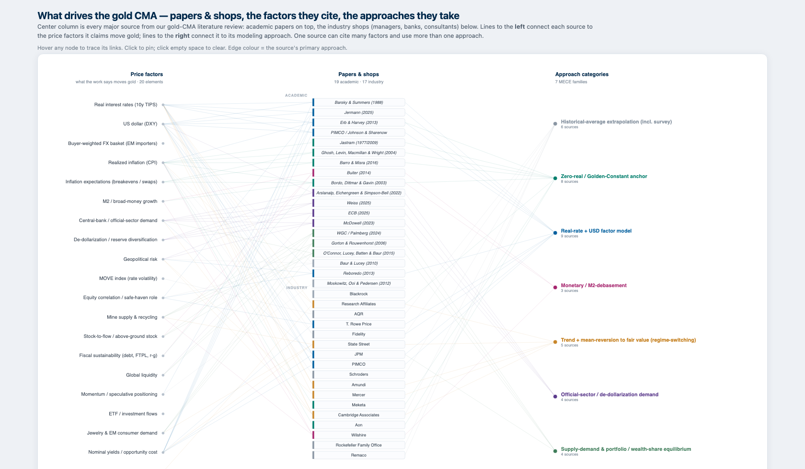
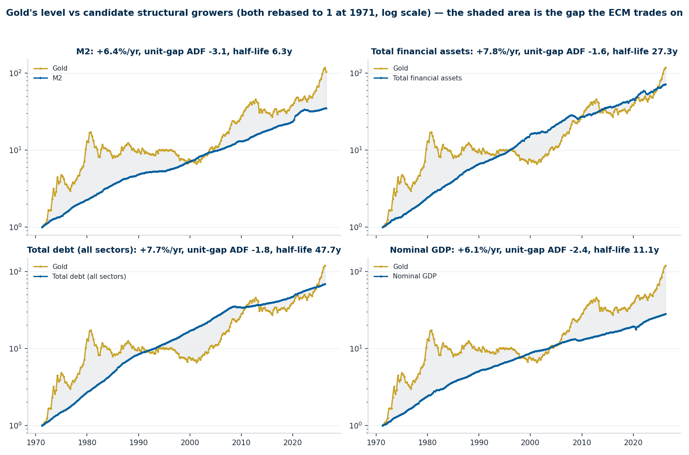
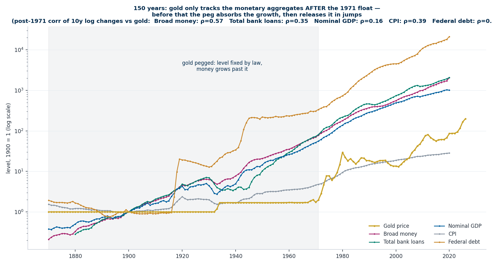
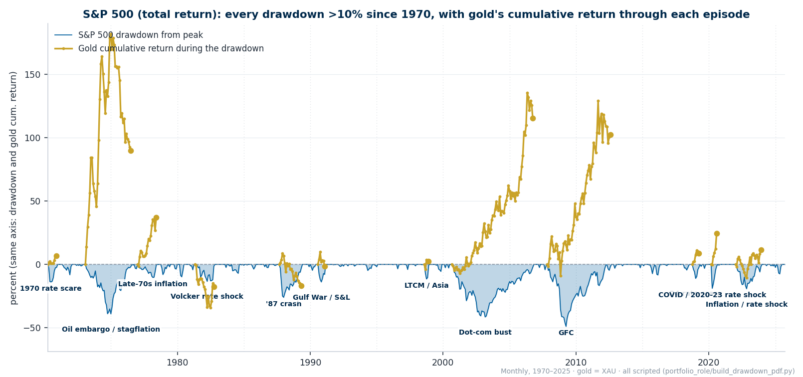
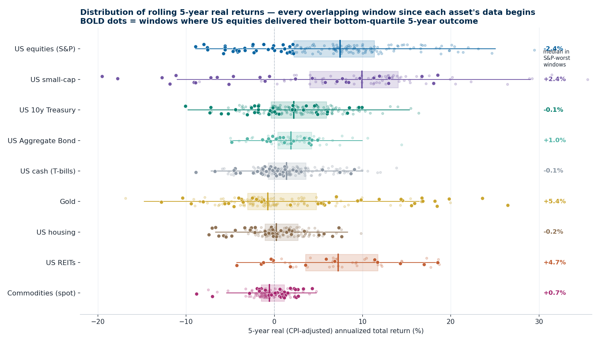
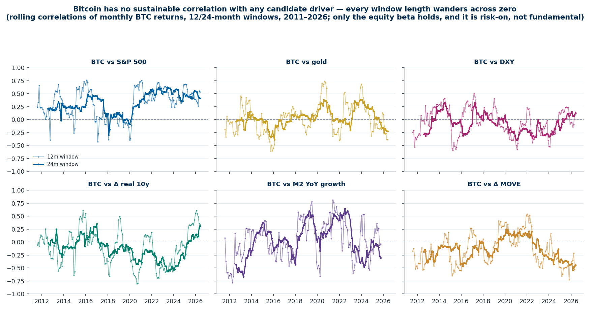
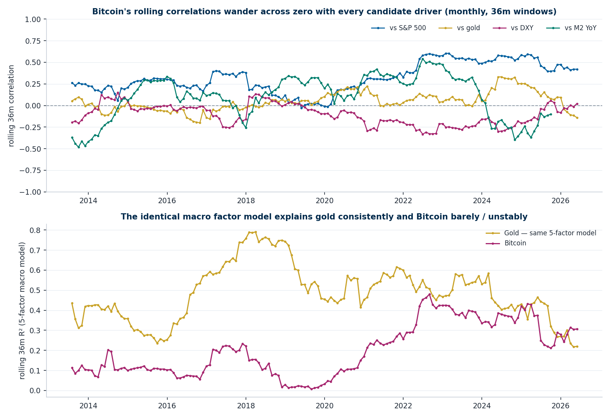
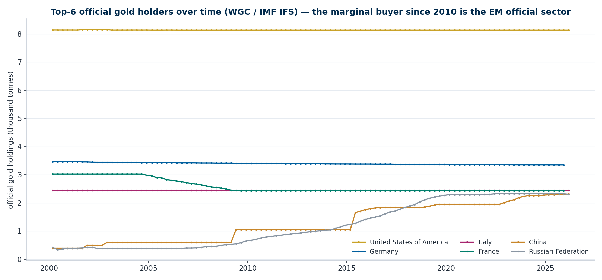

One section per point of my update email. I'm not making the calls here — this is the research and my suggested treatments, prepared for the collaborative process. The feedback I'm asking for: the gold model, the Bitcoin approach, and the two one-pagers (attached).
| Point from the update | Slides |
|---|---|
| 1 · Full literature reviews and a summary of the most important points | 4–5 |
| 2 · Translation from the reviews into my view of the key drivers, gold and BTC | 6 |
| 3 · Initial gold return models with robustness checks — simplicity, assumptions from our existing CMAs | 7 |
| 4 · The appreciation not captured by the model, the error term, qualitative overlays | 8–9 |
| 5 · Research opportunities to go deeper (where I would especially value your feedback) | 10 |
| 6 · Gold correlations and performance during drawdowns (especially left-tail) | 11–12 |
| 7 · Bitcoin and the inconstancy of its relationship with various signals | 13–15 |
| Feedback asks & materials | 3, 16 |
| Appendix: other frequencies · walk-forward OOS · swap-spec cross-check · top official holders | 17–20 |
| # | My suggested treatment | The open question |
|---|---|---|
| 1 | Drift = structural growth band, 4.8–6.7%/yr by anchor | which anchor to carry into the process |
| 2 | Valuation overlay on the ~20y share cycle | functional form and size |
| 3 | One floating DM dollar leg; buyer basket monitored | regime-dependent leg worth the complexity? |
| 4 | US 10y real as the rate leg | too dollar-centric? global real rate next study? |
| 5 | CPI regime threshold at 4% | vs 2.5%; live cell in the workbook |
| 6 | BTC: scenario grid + survival mixture | grid as distribution vs one weighted point |

| Shop | Gold CMA |
|---|---|
| Research Affiliates | ~0% real |
| AQR | 1.4% real |
| State Street | 2.5% |
| JPM | 5.5% |
| Amundi | 6% |
| Mercer | 3.4% |
| Meketa | ~0% real |
| Aon | ~0% real |
| Wilshire | 7% |
| Remaco | 1% |
| β (OLS t below) | M1 Simple | M3 Sophisticated | M6 + mean reversion |
|---|---|---|---|
| Δ Real 10y (per +1pp) | -6.061*** (-4.97) | -8.292*** (-5.81) | -10.976*** (-6.61) |
| DXY return (per +1%) | -0.738*** (-5.80) | -0.788*** (-6.33) | -0.754*** (-5.47) |
| Δ 10Y breakeven (pp) | 1.399 (0.87) | 2.395 (1.49) | 1.889 (1.09) |
| Δ MOVE (bp) | · | 0.070*** (4.05) | 0.088*** (4.53) |
| Δ Real10 × High-CPI | · | 2.963 (1.23) | 4.534* (1.75) |
| Gold gap vs 5y avg, lagged | · | · | 0.001 (0.08) |
| α annualized (%/yr) | 10.3 | 9.9 | 9.3 |
| R² | 0.268 | 0.313 | 0.356 |
| N (periods) | 281 | 281 | 222 |
| Anchor | Growth %/yr | Implied drift* |
|---|---|---|
| M2 | +6.4 | +4.8 |
| CPI | +3.8 | +2.2 |
| Nominal GDP | +6.1 | +4.4 |
| Total debt (all sectors) | +7.7 | +6.0 |
| Federal debt | +8.4 | +6.7 |
| Total financial assets | +7.8 | +6.1 |
*anchor growth − 1.66%/yr above-ground stock growth. Equivalently ≈2.3%/yr real — above the Golden-Constant floor, below the realized post-float drift.


| Univariate R² | DXY | Fed major | Buyer (flow) | Holder (stock) | Official holder |
|---|---|---|---|---|---|
| 1995–2026 | 0.178 | 0.208 | 0.132 | 0.165 | 0.114 |
| 2000s | 0.248 | 0.310 | 0.168 | 0.226 | 0.219 |
| 2010s | 0.099 | 0.121 | 0.107 | 0.110 | 0.085 |
| 2020s | 0.264 | 0.242 | 0.220 | 0.269 | 0.221 |
| 2022+ | 0.253 | 0.235 | 0.284 | 0.304 | 0.213 |
Shaded = best in window. The marginal buyer and the average private holder turn out to be the same ~60% China+India object; the official-holder basket is Euro-heavy (the US hoard drops out as numeraire) and adds nothing.




| Scenario | Share of pool | Implied price | 20y CAGR |
|---|---|---|---|
| Bear | 3% | $34,673 | -5.5% |
| Base | 15% | $173,367 | +2.4% |
| Bull | 60% | $693,467 | +9.8% |
| # | My suggested treatment | The question for you |
|---|---|---|
| 1 | Drift = growth band 4.8–6.7%/yr by anchor (identity: asset growth − supply growth) | which anchor to carry; the 2pp spread is the bull/bear gap |
| 2 | Valuation overlay on the ~20y share cycle; lower half of band at the 97th pctile | functional form (percentile haircut vs half-reversion vs scenario band) |
| 3 | Dollar leg = one floating DM index; Asia buyer/holder basket monitored yearly | is a regime-dependent leg worth the complexity if 2022+ holds? |
| 4 | Rate leg = US 10y real for now | too dollar-centric? run the global-real-rate study next? |
| 5 | CPI regime threshold at 4% (t +1.9/+2.4 qtrly by spec) | vs 2.5%; it is a live input cell in the workbook |
| 6 | BTC = scenario grid × survival mixture, share named as the assumption | distribution vs one weighted point; the survival probability |
Attached: gold one-pager · BTC one-pager · model workbook · full paper. 30 minutes covers all six.
| β (OLS t below) | M1 Simple | M3 Sophisticated | M6 + mean reversion |
|---|---|---|---|
| Δ Real 10y (per +1pp) | -9.947*** (-5.91) | -12.737*** (-6.33) | -14.638*** (-6.48) |
| DXY return (per +1%) | -0.474*** (-2.87) | -0.523*** (-3.21) | -0.495*** (-2.67) |
| Δ 10Y breakeven (pp) | 1.268 (0.68) | 2.686 (1.40) | 2.352 (1.16) |
| Δ MOVE (bp) | · | 0.051 (1.54) | 0.045 (1.20) |
| Δ Real10 × High-CPI | · | 6.808* (1.94) | 9.156** (2.36) |
| Gold gap vs 5y avg, lagged | · | · | 0.011 (0.37) |
| α annualized (%/yr) | 10.8 | 10.1 | 7.4 |
| R² | 0.415 | 0.452 | 0.505 |
| N (periods) | 93 | 93 | 74 |
| β (OLS t below) | M1 Simple | M3 Sophisticated | M6 + mean reversion |
|---|---|---|---|
| Δ Real 10y (per +1pp) | -2.223*** (-3.71) | -4.111*** (-6.19) | -5.341*** (-7.22) |
| DXY return (per +1%) | -0.963*** (-15.56) | -0.986*** (-16.17) | -0.963*** (-14.14) |
| Δ 10Y breakeven (pp) | 0.629 (0.77) | 1.530* (1.87) | 1.227 (1.41) |
| Δ MOVE (bp) | · | 0.041*** (5.62) | 0.049*** (6.20) |
| Δ Real10 × High-CPI | · | 5.138*** (3.81) | 6.177*** (4.41) |
| Gold gap vs 5y avg, lagged | · | · | 0.000 (0.01) |
| α annualized (%/yr) | 10.3 | 9.7 | 8.9 |
| R² | 0.214 | 0.244 | 0.256 |
| N (periods) | 1221 | 1221 | 962 |
| OOS R² (vs OOS mean) | M1 Simple | M2 (M3 ex-regime) | M4 2Y swap | M5 5Y swap | M6 Reversion |
|---|---|---|---|---|---|
| Monthly | 20.2% | 25.6% | 22.6% | 22.2% | 16.3% |
| Weekly | 17.3% | 19.3% | 18.0% | 17.5% | 20.2% |
| Quarterly | 37.5% | 33.4% | 32.7% | 35.1% | 15.7% |
| Simple returns, bp | Daily | Weekly | Monthly |
|---|---|---|---|
| Intercept (per period) | 0.0490 | 0.2506 | 1.0715 |
| Real 10y (per +1bp) | -0.0179 | -0.0229 | -0.0636 |
| DXY (per +1%) | -0.6874 | -0.9353 | -0.7196 |
| 2y inflation swap (per +1bp) | 0.0074 | 0.0161 | 0.0117 |
| R² | 0.105 | 0.219 | 0.277 |
| N | 5720 | 1144 | 263 |
